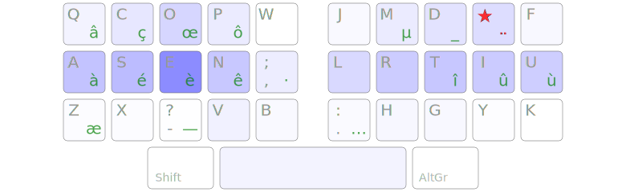
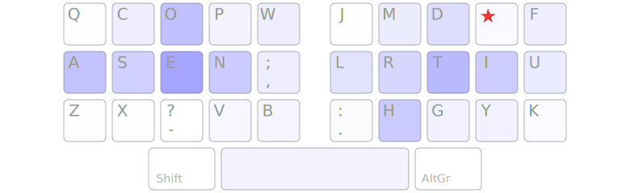
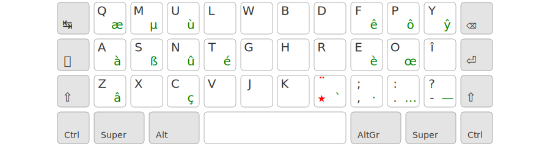
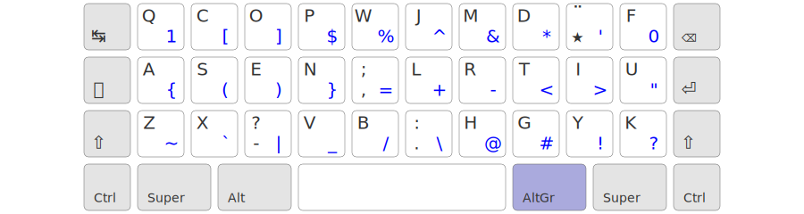
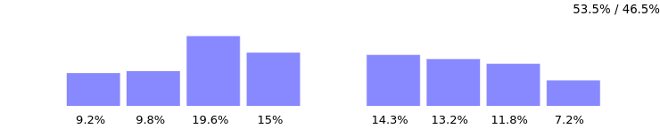
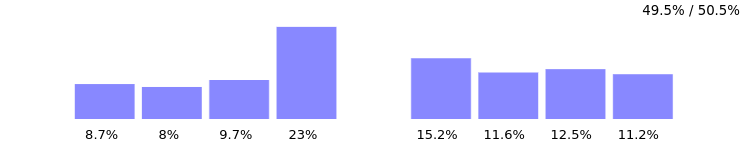
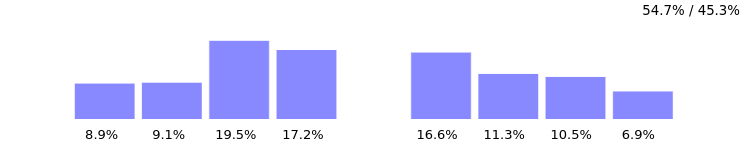
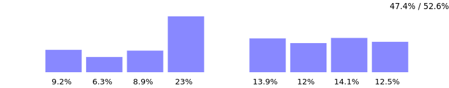
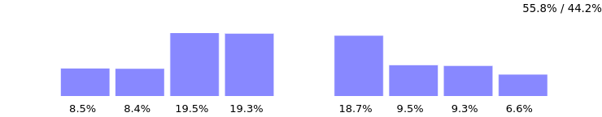
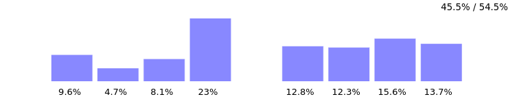

Une disposition de clavier ergonomique optimisée pour le français, l’anglais et la programmation.
powered by x-keyboard géométrie :
Voir le dépôt GitHub pour les instructions d’installation.
WTFPL – Do What the Fuck You Want to Public License.
L’optimisation d’une disposition de clavier francophone comprend deux difficultés :
TL;PL: Ergo‑L est une disposition optimisée façon Colemak / Workman, utilisant une touche morte de type Lafayette pour les caractères accentués.
Ergo‑L est meilleur que Bépo pour le Français, meilleur que Dvorak pour l’Anglais et meilleur que Qwerty pour la programmation !

fréquence des touches en français

fréquence des touches en anglais
Il y a eu plusieurs projets anglo-saxons d’optimisation du clavier, tous basés sur un réarrangement des touches du Qwerty visant à :
Le plus connu et le plus ancien (finalisé en 1932) est Dvorak. Particularité : toutes les voyelles sont sous la main gauche. Mais avec la généralisation de la bureautique, les raccourcis claviers Ctrl-{Q,A,S,Z,X,C,V} sont devenus indispensables et les projets récents d’optimisation de disposition clavier ont cherché à les préserver.
Ergo‑L reprend les principes de Colemak et Workman et concerve la plupart des raccourcis usuels. Ctrl-C est déplacé mais reste accessible d’une main. Nous pensons que le gain en ergonomie justifie ce décalage.
Les dispositions Dvorak, Colemak et Workman sont optimisées pour l’anglais exclusivement. Les dispositions francophones Dvorak-fr et Bépo appliquent au français le principe de Dvorak (donc sans support des raccourcis claviers usuels), quitte à devenir pénalisantes pour l’anglais.
Pourtant, à une exception près, les 9 lettres les plus fréquentes sont les mêmes en français (ESANITRUO) et en anglais (ETAOHNISR) :
| E | S | A | N | I | T | R | U | O | H | |
|---|---|---|---|---|---|---|---|---|---|---|
| fr | 14.44 % | 7.25 % | 7.14 % | 6.78 % | 6.74 % | 6.74 % | 6.52 % | 6.16 % | 5.29 % | 1.06 % |
| en | 11.72 % | 6.15 % | 7.97 % | 6.63 % | 6.50 % | 9.04 % | 5.33 % | 2.68 % | 7.85 % | 6.71 % |
Ergo‑L place donc ces lettres aux emplacements les plus confortables (suivant les principes de Workman) et fait en sorte qu’aucun enchaînement fréquent en français ou en anglais ne soit rédhibitoire. On obtient donc une efficacité supérieure à Bépo ou Dvorak-fr, sans sacrifier la programmation ou l’anglais.
Azerty, Dvorak-fr et Bépo gèrent les caractères accentués de façon assez similaire :
C’est la source de deux défauts majeurs dont Qwerty est exempt :
Pour éviter cela, Ergo‑L utilise une touche morte de type Qwerty-Lafayette pour tous les caractères accentués et ponctuations spéciales. Cela occasionne environ 4 % de frappes supplémentaires pour un texte francophone, ce qui est négligeable comparé au gain de confort que cela apporte. La touche AltGr peut ainsi être dédiée aux seuls symboles de programmation.
Il n’y a pas de lettres à l’extérieur des 3×10 touches du centre pour éviter le manque de confort et de précision causé par les extensions. Cela implique que :
é se fait en touche morte ->
s pour garder l’enchaînement
ée efficace.
-> => </ /> (0) [0] [''] ("") {} ~/ …
La touche morte et la couche AltGr rendent la disposition compatible avec les claviers ultra compacts (33 touches minimum).


Les chiffres sont en accès direct, sans Shift, pour faciliter leur enchaînement (= la saisie de nombres). Oubliez votre pavé numérique !
Les raccourcis usuels Ctrl-{Q,A,S,Z,X,V} ont été conservés car le gain marginal d’ergonomie en mettant une autre lettre à la place n’est pas suffisant pour compenser la perte de ces raccourcis — loin s’en faut (une exception : Ctrl-C qui a permis un gain important d’ergonomie, et a été modifié de sorte à gêner le moins possible).
Beaucoup d’attention a été portée sur les enchaînements de lettres, avec la plupart des enchaînements fréquents qui se font soit avec une alternance main gauche / main droite, soit avec un roulement intérieur (se terminant sur le majeur ou l’index). Les lettres fréquemment doublées (e.g. L et M) sont placées sous les index. On privilégie le confort sur la vitesse : il est possible de taper vite avec n’importe quelle disposition de clavier.
Ergo‑L poursuit les mêmes objectifs que Bépo pour le français, mais d’une façon différente.
| Ergo‑L | Bépo | |
|---|---|---|
| fr |  |  |
| fr en |
 |  |
| en |  |  |
Le layout est encore en cours de développement, notamment pour améliorer l’efficacité de la couche AltGr. Vous pouvez participer aux travaux en rejoignant le serveur Discord dédié.
On a envisagé par le passé de placer le E sous l’index, comme en Bépo, parce que c’est la lettre la plus fréquente en français ; mais cela ruine l’équilibre de la charge des doigts et complique beaucoup d’enchaînements. De même, on a essayé de mettre toutes les voyelles d’un côté (comme Dvorak ou Bépo) mais cela engendrait plus de problèmes que cela n’en résolvait.